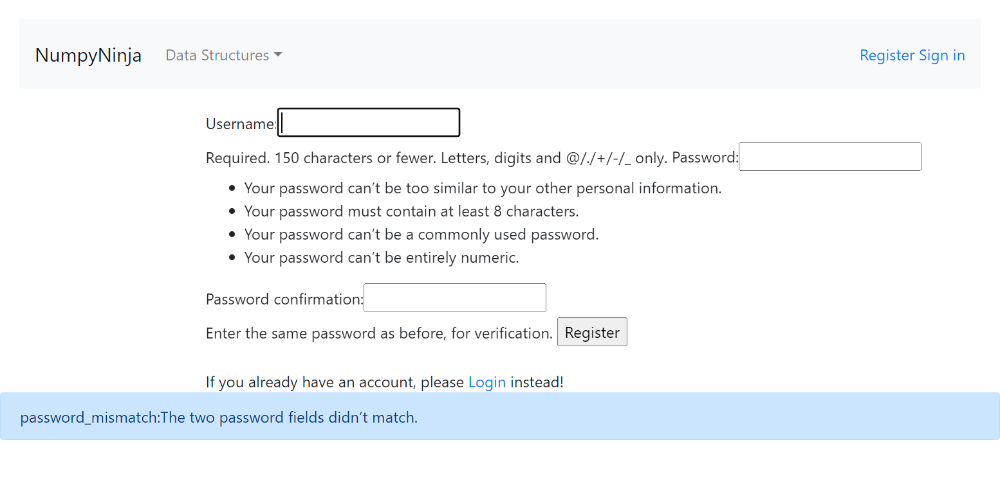

-
Data Structure and Signout
8:22:20 PM / 00:00:09:034 Pass
Data Structure and Signout
01.18.2023 8:22:20 PM 01.18.2023 8:22:30 PM 00:00:09:034 · #test-id=1I want to use this template for my feature filePassValidating functionality of Data structure and signing out from applicationGiven User clicks Get StartedWhen User clicks on sign in buttonThen User should see login screenWhen User enters username as "code_warriors" and password as "ssdet@88"And click Login buttonThen User should see "You are logged in" msgWhen User clicks on Get started of DataStructure IntroductionThen User should see DataStructure IntroductionWhen User clicks on Time Complexity in topics coveredThen Time Complexity topic Try here should be visibleAnd User click Time Complexity Try hereThen User should see tryEditor pageAnd enters following code in editorprint("This code is for Data Structures Time complexity") And clicks RunThen navigate backAnd click on Signout -
Graph function after signing in
8:22:30 PM / 00:00:10:936 Pass
Graph function after signing in
01.18.2023 8:22:30 PM 01.18.2023 8:22:41 PM 00:00:10:936 · #test-id=36Passsign in in dsalgo portal and entering to GraphGiven User clicks Get StartedWhen User clicks on sign in buttonThen User should see login screenWhen User enters username as "code_warriors" and password as "ssdet@88"And click Login buttonThen User should see "You are logged in" msgWhen User clicks on Get started of GraphThen User should see Graph Page screenWhen User clicks on Graph in topics coveredThen Graph topic Try here should be visibleAnd User click that Try hereThen User should see tryEditor pageAnd enters following code in editorprint("This code is for Graph") And clicks RunPassGraph representation validationGiven User clicks Get StartedWhen User clicks on sign in buttonThen User should see login screenWhen User enters username as "code_warriors" and password as "ssdet@88"And click Login buttonThen User should see "You are logged in" msgWhen User clicks on Get started of GraphThen User should see Graph Page screenWhen User clicks on Graph Representations in topics coveredThen Graph Representation topic Try here should be visibleAnd User click that Graph Representation Try hereThen User should see tryEditor pageAnd enters following code in editorprint("This code is for Graph Represenation") And clicks Run -
Linked List
8:22:41 PM / 00:00:40:255 Pass
Linked List
01.18.2023 8:22:41 PM 01.18.2023 8:23:21 PM 00:00:40:255 · #test-id=97I want to use this template for my feature filePasssign in in dsalgo portal and entering to Linked List IntroductionGiven User clicks Get StartedWhen User clicks on sign in buttonThen User should see login screenWhen User enters username as "code_warriors" and password as "ssdet@88"And click Login buttonThen User should see "You are logged in" msgWhen User clicks on Get started of Linked ListThen User should see Linked List screenWhen User clicks on Introduction in topics coveredThen Introduction topic Try here should be visibleAnd User click that Introduction page Try hereThen User should see tryEditor pageAnd enters following code in editorprint("This code is for Linked List Introduction") And clicks RunPassCreating linked list validationGiven User clicks Get StartedWhen User clicks on sign in buttonThen User should see login screenWhen User enters username as "code_warriors" and password as "ssdet@88"And click Login buttonThen User should see "You are logged in" msgWhen User clicks on Get started of Linked ListThen User should see Linked List screenWhen User clicks on Creating linked list in topics coveredThen Creating linked list topic Try here should be visibleAnd User click that Creating linked list Try hereThen User should see tryEditor pageAnd enters following code in editorprint("This code is for Creating linked list") And clicks RunPassTypes of linked list validationGiven User clicks Get StartedWhen User clicks on sign in buttonThen User should see login screenWhen User enters username as "code_warriors" and password as "ssdet@88"And click Login buttonThen User should see "You are logged in" msgWhen User clicks on Get started of Linked ListThen User should see Linked List screenWhen User clicks on Types of linked list in topics coveredThen Types of linked list topic Try here should be visibleAnd User click that Types of linked list Try hereThen User should see tryEditor pageAnd enters following code in editorprint("This code is for Types of linked list") And clicks RunPassImplement linked list in python validationGiven User clicks Get StartedWhen User clicks on sign in buttonThen User should see login screenWhen User enters username as "code_warriors" and password as "ssdet@88"And click Login buttonThen User should see "You are logged in" msgWhen User clicks on Get started of Linked ListThen User should see Linked List screenWhen User clicks on Implement linked list in python in topics coveredThen Implement linked list in python topic Try here should be visibleAnd User click that Implement linked list in python Try hereThen User should see tryEditor pageAnd enters following code in editorprint("This code is for Implement linked list in python") And clicks RunPassTraversal in Linked list validationGiven User clicks Get StartedWhen User clicks on sign in buttonThen User should see login screenWhen User enters username as "code_warriors" and password as "ssdet@88"And click Login buttonThen User should see "You are logged in" msgWhen User clicks on Get started of Linked ListThen User should see Linked List screenWhen User clicks on Traversal in topics coveredThen Traversal topic Try here should be visibleAnd User click that Traversal Try hereThen User should see tryEditor pageAnd enters following code in editorprint("This code is for Traversal") And clicks RunPassInsertion in Linked list validationGiven User clicks Get StartedWhen User clicks on sign in buttonThen User should see login screenWhen User enters username as "code_warriors" and password as "ssdet@88"And click Login buttonThen User should see "You are logged in" msgWhen User clicks on Get started of Linked ListThen User should see Linked List screenWhen User clicks on Insertion in topics coveredThen Insertion topic Try here should be visibleAnd User click that Insertion Try hereThen User should see tryEditor pageAnd enters following code in editorprint("This code is for Insertion") And clicks RunPassDeletion in Linked list validationGiven User clicks Get StartedWhen User clicks on sign in buttonThen User should see login screenWhen User enters username as "code_warriors" and password as "ssdet@88"And click Login buttonThen User should see "You are logged in" msgWhen User clicks on Get started of Linked ListThen User should see Linked List screenWhen User clicks on Deletion in topics coveredThen Deletion topic Try here should be visibleAnd User click that Deletion Try hereThen User should see tryEditor pageAnd enters following code in editorprint("This code is for Deletion") And clicks Run -
Register page
8:23:21 PM / 00:00:09:606 Fail
Register page
01.18.2023 8:23:21 PM 01.18.2023 8:23:30 PM 00:00:09:606 · #test-id=308I want to use this template for my feature fileFailRegister page validationFailRegister page validationGiven User clicks Get StartedWhen User should see Register button in home page and clicks RegisterThen User should navigate to Register pageWhen User enters "data_warriors" "Ssdet@88" "ssdet$88"Then User clicks on Register buttonThen User should see "password_mismatch:The two password fields didn?t match."stepDefinitions.Hooks.AddScreenshot(io.cucumber.java.Scenario)image -
Stack function after signing in
8:23:30 PM / 00:00:30:761 Pass
Stack function after signing in
01.18.2023 8:23:30 PM 01.18.2023 8:24:01 PM 00:00:30:761 · #test-id=324Passsign in in dsalgo portal and entering to StackGiven User clicks Get StartedWhen User clicks on sign in buttonThen User should see login screenWhen User enters username as "code_warriors" and password as "ssdet@88"And click Login buttonThen User should see "You are logged in" msgWhen User clicks on Get started of StackThen User should see Stack Page screenWhen User clicks on Operations in Stack in topics coveredThen Operations in Stack topic Try here should be visibleAnd User click that Operations in Stack Try hereThen User should see tryEditor pageAnd enters following code in editorprint("This code is for Operations in Stack") And clicks RunPasssign in in dsalgo portal and entering to StackGiven User clicks Get StartedWhen User clicks on sign in buttonThen User should see login screenWhen User enters username as "code_warriors" and password as "ssdet@88"And click Login buttonThen User should see "You are logged in" msgWhen User clicks on Get started of StackThen User should see Stack Page screenWhen User clicks on Implementation in Stack in topics coveredThen Implementation in Stack topic Try here should be visibleAnd User click that Implementation in Stack Try hereThen User should see tryEditor pageAnd enters following code in editorprint("This code is for Implementation in Stack") And clicks RunPasssign in in dsalgo portal and entering to StackGiven User clicks Get StartedWhen User clicks on sign in buttonThen User should see login screenWhen User enters username as "code_warriors" and password as "ssdet@88"And click Login buttonThen User should see "You are logged in" msgWhen User clicks on Get started of StackThen User should see Stack Page screenWhen User clicks on Applications in Stack in topics coveredThen Applications in Stack topic Try here should be visibleAnd User click that Applications in Stack Try hereThen User should see tryEditor pageAnd enters following code in editorprint("This code is for Applications in stack") And clicks Run
-
org.openqa.selenium.TimeoutException
1 tests
org.openqa.selenium.TimeoutException
1 failedStatus Timestamp TestName Fail 20:23:29 PM Then User should see "password_mismatch:The two password fields didn?t match." Register page.Register page validation.Then User should see "password_mismatch:The two password fields didn?t match."
-
@test
5 tests
@test
4 passed 1 failedStatus Timestamp TestName Pass 20:22:21 PM Validating functionality of Data structure and signing out from application Data Structure and Signout.Validating functionality of Data structure and signing out from applicationPass 20:22:30 PM sign in in dsalgo portal and entering to Graph Graph function after signing in.sign in in dsalgo portal and entering to GraphPass 20:22:35 PM Graph representation validation Graph function after signing in.Graph representation validationFail 20:23:21 PM Register page validation Register page.Register page validationPass 20:23:30 PM sign in in dsalgo portal and entering to Stack Stack function after signing in.sign in in dsalgo portal and entering to Stack -
@linkedlist
7 tests
@linkedlist
7 passedStatus Timestamp TestName Pass 20:22:41 PM sign in in dsalgo portal and entering to Linked List Introduction Linked List.sign in in dsalgo portal and entering to Linked List IntroductionPass 20:22:47 PM Creating linked list validation Linked List.Creating linked list validationPass 20:22:53 PM Types of linked list validation Linked List.Types of linked list validationPass 20:22:59 PM Implement linked list in python validation Linked List.Implement linked list in python validationPass 20:23:04 PM Traversal in Linked list validation Linked List.Traversal in Linked list validationPass 20:23:10 PM Insertion in Linked list validation Linked List.Insertion in Linked list validationPass 20:23:15 PM Deletion in Linked list validation Linked List.Deletion in Linked list validation
Started
Jan 18, 2023 08:22:20 PM
Ended
Jan 18, 2023 08:24:01 PM
Features Passed
4
Features Failed
1
Features
Scenarios
Steps
Timeline
Tags
| Name | Passed | Failed | Skipped | Others | Passed % |
|---|---|---|---|---|---|
| @test | 4 | 1 | 0 | 0 | 80% |
| @linkedlist | 7 | 0 | 0 | 0 | 100% |